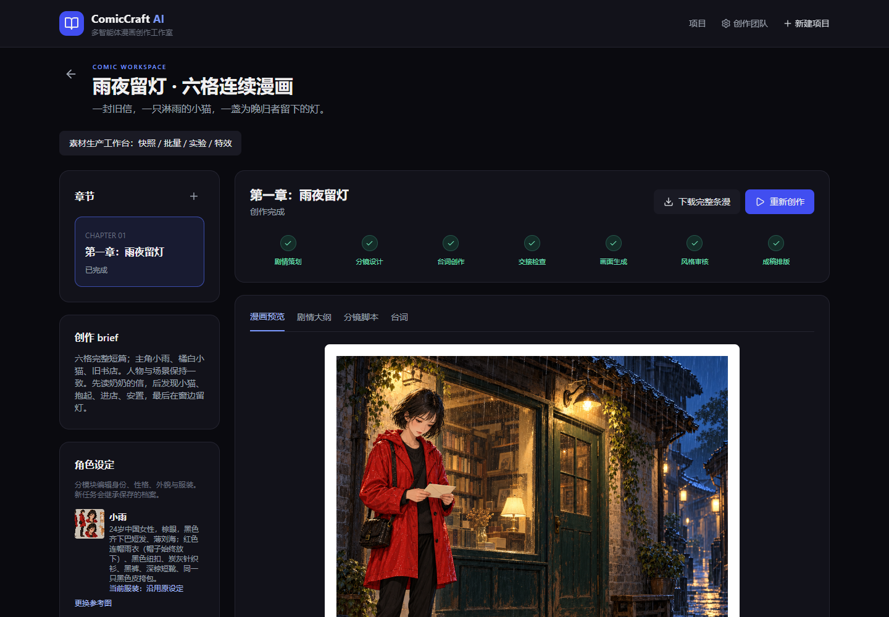
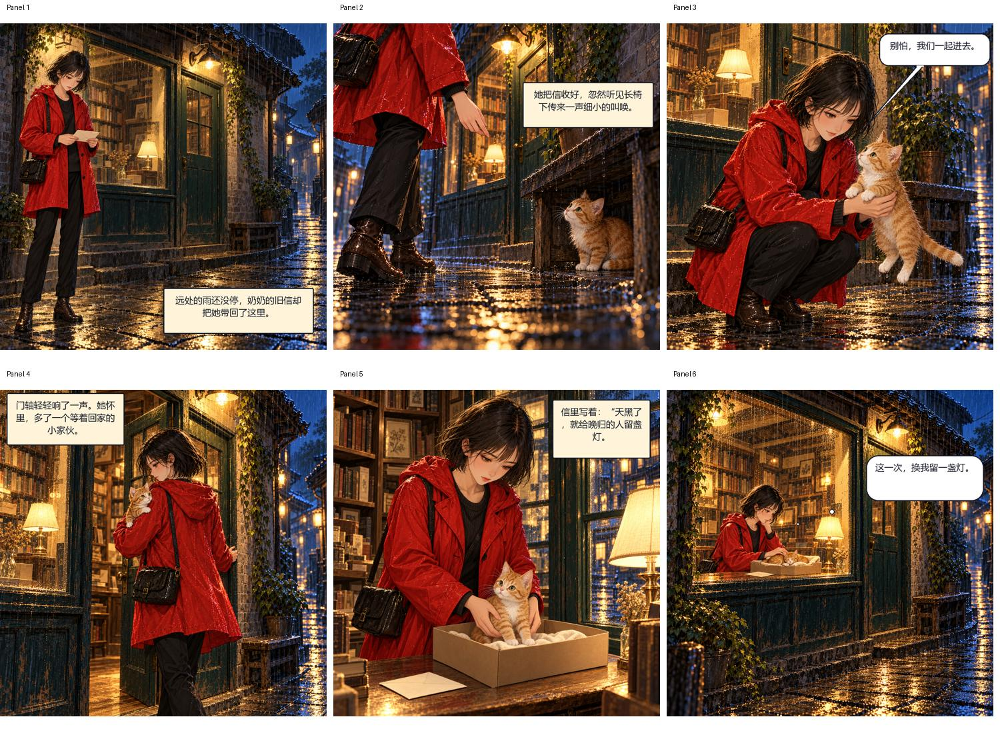

OPEN SOURCE · COMIC WORKSPACE
让故事，成为漫画。
ComicCraft AI 将角色、分镜、台词、画面与排版组织成可修改、可回退的创作流程。
这是静态项目展示页。完整创作网站需在本机运行；默认采用 ChatGPT 任务回填，不自动控制桌面客户端。

从初稿，到可继续修改的成稿
六个分工 Agent剧情、分镜、台词、生图、审核、排版，明确职责与结构化交接。
画面内气泡编辑拖动位置、尺寸和尾尖，切换对白、独白与旁白。
局部蒙版精修圈选失真区域、比较候选、确认采用，并保留原版。
素材生产工作台设定快照、批次、参数候选对比与非破坏特效。
示例作品：《雨夜留灯》
虚构人物 AI 漫画，展示连续剧情与画面内气泡。完整最新成稿和修订对比见源码的 outputs 目录。

本机启动，保留创作过程
需要 Python 3.11+、Node.js 20+ 和 Git。Windows 可运行 start.ps1，默认地址 http://127.0.0.1:8000。
完整操作手册 · 架构与能力边界
当前未提供公网身份认证和多租户隔离。不要将完整后端直接开放到公网。参数实验中的风格与尺寸是提示词约束，不是已验证的 seed 或采样步数。